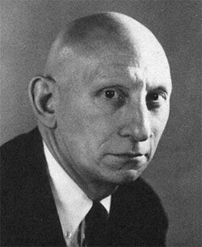

Alan J. Perlis | |
|---|---|
 | |
| Born | April 1, 1922 Pittsburgh, Pennsylvania, U.S. |
| Died | February 7, 1990 (aged 67) New Haven, Connecticut, U.S. |
| Education | |
| Known for | |
| Awards |
|
| Scientific career | |
| Fields | Computer science |
| Institutions | |
| Thesis | On Integral Equations, Their Solution by Iteration and Analytic Continuation (1950) |
| Philip Franklin | |
Doctoral students | |
Alan Jay Perlis (April 1, 1922 – February 7, 1990) was an American computer scientist and professor at Purdue University, Carnegie Mellon University and Yale University. He is best known for his pioneering work in programming languages and in 1966 he became the first recipient of the ACM Turing Award.[1]
Perlis was born to a Jewish family in Pittsburgh, Pennsylvania. He graduated from Taylor Allderdice High School in 1939.[2] In 1943, he received his bachelor's degree in chemistry from the Carnegie Institute of Technology (later renamed Carnegie Mellon University).
During World War II, he served in the U.S. Army, where he became interested in mathematics. He then earned both a master's degree (1949) and a Ph.D. (1950) in mathematics at Massachusetts Institute of Technology (MIT). His doctoral dissertation was titled "On Integral Equations, Their Solution by Iteration and Analytic Continuation".
In 1952, he participated in Project Whirlwind.[3] He joined the faculty at Purdue University and in 1956, moved to the Carnegie Institute of Technology. He was chair of mathematics and then the first head of the computer science department. In 1962, he was elected president of the Association for Computing Machinery.
He was awarded the inaugural Turing Award in 1966, according to the citation, "for his influence in the area of advanced programming techniques and compiler construction." This is a reference to the work he had done on Internal Translator in 1956 (described by Donald Knuth as the first successful compiler), and as a member of the team that developed the programming language ALGOL.
In 1971, Perlis moved to Yale University to take the chair of computer science and hold the Eugene Higgins chair. In 1977, he was elected to the National Academy of Engineering.
In 1982, he wrote an article, "Epigrams on Programming", for the Association for Computing Machinery's (ACM) SIGPLAN journal, describing in one-sentence distillations many of the things he had learned about programming over his career. The epigrams have been widely quoted.[4] He remained at Yale until his death in 1990.
The epigrams are a series of short, programming-language-neutral, humorous statements about computers and programming, which are widely quoted. It first appeared in SIGPLAN Notices 17(9), September 1982. In epigram #54, Perlis coined the term "Turing tarpit", which he defined as a programming language where "everything is possible but nothing of interest is easy."
Publications, a selection:[5]
{kind=link}